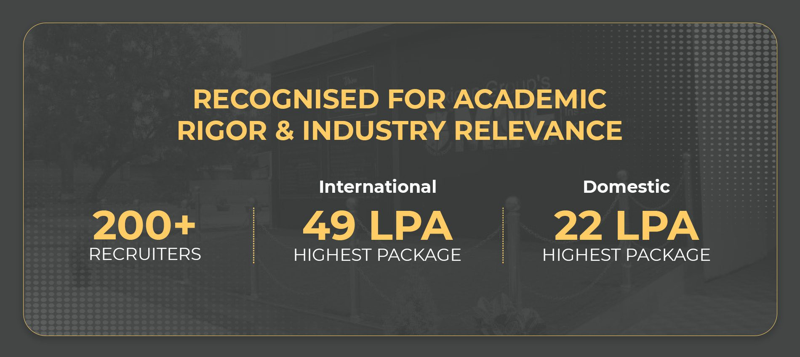
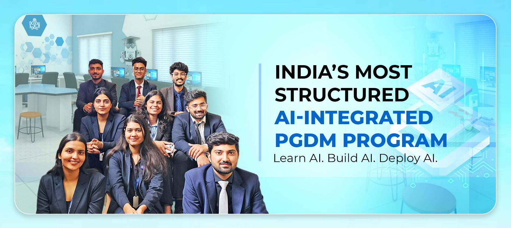
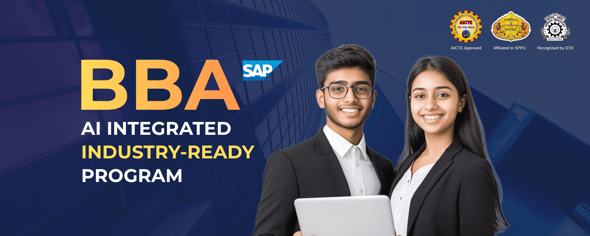
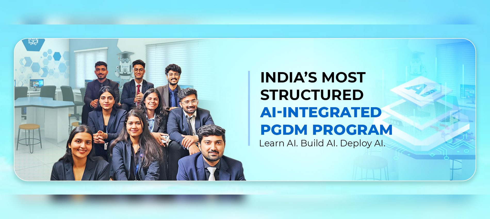

Global MBA Career Scope 2026: Which Industries Pay the Highest Packages?
Global MBA career scope in 2026, highest-paying industries, salary trends, international job opportunities, and Lexicon MILE's MBA Global.
ACADEMIC & INDUSTRY INSIGHTS
Explore 27 comprehensive articles across PGDM specializations, Global MBA partnerships, BBA career launchpads, salary benchmarks, and AI-era business leadership curated by Lexicon MILE faculty and corporate advisors.
Global MBA career scope in 2026, highest-paying industries, salary trends, international job opportunities, and Lexicon MILE's MBA Global.

Understand PGDM placement trends, recruiter expectations, salary growth, and industry demand. Discover Lexicon MILE's placement ecosystem.
Global MBA vs Regular MBA in 2026. Explore fees, ROI, placements, career opportunities and choose right MBA with Lexicon MILE.

Looking for a PGDM? Learn the full form, eligibility, career scope, salary, and how Lexicon MILE helps you become industry-ready.
How MBA international university collaborations work. Compare Global MBA options, UK partnerships, and explore Lexicon MILE's Global MBA.
Is PGDM equivalent to MBA? Learn the difference, AICTE recognition, career opportunities, and why Lexicon MILE's PGDM is industry-focused.
Discover the top 10 skills every PGDM Programme student needs in 2026. Learn how Lexicon MILE helps build industry-ready leaders through PGDM
Compare PGDM fees, ROI, salary packages, scholarships, and payback period. See why Lexicon MILE's AI-Integrated PGDM delivers strong career.

Comparing Lexicon MILE BBA vs other Pune BBA colleges for 2026? See how fees, curriculum & industry exposure stack up against top options.
Explore the Lexicon MILE BBA AI-Integrated Program for 2026 - specializations, curriculum tools, and career scope to guide your choice.
An honest Lexicon MILE BBA review - campus life, facilities, clubs, events, and whether the program is worth the fees for 12th pass students.
BBA after 12th is the right move in 2026? Explore career scope, salary potential, and why Lexicon MILE's AI-integrated BBA stands out.
Planning Lexicon MILE BBA admission in Pune? Get BBA fees, eligibility, CUET score & step-by-step application process for 2026 intake.
Find the best MBA and PGDM colleges in Pune accepting CAT, CMAT, MAT, and XAT scores. Explore admissions, eligibility criteria
Planning to do an MBA after a BBA? This complete career guide covers eligibility, top MBA programs, career paths, and why Lexicon MILE.

Which PGDM/MBA specialization to choose in 2026? Compare different specializations and discover how Lexicon MILE's programs help you.
Benefits of a Global MBA in India, international career opportunities, and fees for Lexicon MILE's UK-affiliated MBA Global program in Pune.
Confused between PGDM and MBA? Compare curriculum, fees, career scope, and industry recognition. See how Lexicon MILE programs works
Explore why Pune is a leading management education hub, featuring industry-integrated B-schools and global programs like Lexicon MILE
Explore India vs UK MBA Global programs, comparing structured academic learning with global exposure and career-focused business education.
Top 10 PGDM colleges in Pune, comparing programs, specializations, industry exposure, placements, and career opportunities
Explore MBA colleges in Pune, Courses fees, and eligibility. Compare top institutes & find the right MBA program for you. Apply now!
Lexicon MILE's AI-integrated PGDM stands out with industry-aligned curriculum, digital skills, and strong placements
How PGDM programs build future business leaders through industry-focused learning, and global exposure at top institutes like Lexicon MILE.
How Lexicon MILE's Global MBA in Pune prepares you for international careers with global exposure, industry learning, and strong placements.
Discover why PGDM graduates are in high demand in 2027, with industry-ready skills, practical learning, and strong placement opportunities.
Discover why placement records are crucial when selecting an MBA institute and how strong industry connections can shape your career success.
We couldn't find any articles matching your search query. Try searching for "PGDM", "BBA", "MBA", "ROI", or "placements".
Explore AI-driven management education, global corporate partnerships with University of South Wales (UK), and stellar placement opportunities at Lexicon MILE Pune.